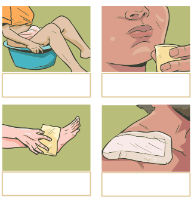

Agora, vamos conhecer algumas preparações caseiras. Arraste os títulos para cada uma das imagens correspondentes.


Banho de assento
É a imersão em água morna, na posição sentada, cobrindo com quantidade suficiente as nádegas e o quadril, geralmente em bacia esmaltada ou em louça sanitária apropriada e previamente higienizada. Diversas plantas medicinais frescas ou suas partes secas, além de óleos essenciais, podem ser adicionados ao banho.
Exemplo de prescrição de banho de assento.
Paciente fictício
Uso tópico:
Schinus terebinthifolia, entrecasca rasurada ou triturada (aroeira) 100 g
Água q.s.p. 1 litro
Preparar uma decocção colocando as entrecascas para ferver durante 5 a 10 minutos, coar e esperar esfriar. Fazer banho de assento por 15 minutos, no mesmo dia do preparo, diariamente por 2 semanas. Não utilizar decocções preparadas no dia anterior ou há mais tempo.
Bochecho e gargarejo
Bochecho é uma forma de tratamento que consiste em reter o líquido dentro da cavidade oral e fazer movimentos voluntários de agitação do líquido durante 30 segundos, desprezando-o ao final. No gargarejo, o líquido é mantido mais próximo da orofaringe, com a cabeça um pouco elevada, e o paciente expele ar, fazendo o líquido borbulhar durante 30 segundos, desprezando-o ao final. São indicados para o tratamento de condições da mucosa orofaríngea. Podem ser feitos com extratos aquosos (infuso ou decocto) ou com tinturas e/ou extratos fluidos veiculados em água, com as espécies que possuam atividade anti-inflamatória e/ou antisséptica. Geralmente, as tinturas e alcoolaturas são diluídas em água na proporção de 1 parte da tintura para 9 partes de água (10%). Os extratos fluidos podem ser diluídos a 1% (aproximadamente 30 gotas em 150 mL de água).
Exemplo de prescrição de bochecho.
Paciente fictício
Uso tópico:
Malva sylvestris, folha e/ou flor (malva) 4,5 a 7,5 g
Água q.s.p. 150 mL
Preparar uma decocção colocando a droga vegetal para ferver durante 15 minutos, coar e esperar esfriar. Fazer bochecho durante 30 segundos, 3 vezes ao dia.
Exemplo de prescrição de gargarejo.
Paciente fictício
Uso tópico:
Tintura de Punica granatum, pericarpo (romã) (RDE: 1:5) 15mL
Água q.s.p. 150 mL
Diluir 15 mL da tintura em 150 mL de água. Fazer bochechos e gargarejos três vezes ao dia.
Compressa
É uma forma de tratamento que consiste em colocar, sobre o local lesionado, uma gaze, algodão ou pano limpo umedecido por uma forma farmacêutica líquida (extrato aquoso, extrato fluido, glicólico e/ou tinturas), dependendo da indicação de uso.
Exemplo de prescrição de compressa.
Paciente fictício
Uso tópico:
Varronia curassavica, folhas secas (erva-baleeira) 3 g
Água q.s.p. 150 mL
Aquecer 150 mL de água até a fervura e desligar o fogo. Adicionar a planta, tampar e aguardar 5 minutos, depois coar. Aplicar na forma de compressas na região afetada, de duas a três vezes ao dia.
Emplastro e cataplasma
Emplastro é a forma farmacêutica para aplicação externa. Consiste em uma base adesiva contendo um ou mais princípios ativos distribuídos em uma camada uniforme num suporte apropriado feito de material sintético ou natural. Destinada a manter o princípio ativo em contato com a pele atuando como protetor ou como agente queratolítico.
Cataplasma é uma preparação caseira feita a partir de substâncias pastosas, tais como argilas ou pastas feitas com farinhas, onde podem ser acrescentadas plantas medicinais frescas ou secas, sob a forma de droga vegetal pulverizada ou rasurada, extrato aquoso, óleos vegetais e/ou essenciais. Pode ainda ser aplicada a planta medicinal fresca e macerada sobre a superfície corporal a ser tratada. Deve ser preparado em recipiente de vidro ou porcelana, e só deve ser aplicado em pele íntegra (sem ferimentos). Geralmente é indicado para efeito local no tratamento da dor e inflamação. Embora possa haver absorção transdérmica de ativos com efeito sistêmico, não é comum que fitoterápicos sejam utilizados desta forma. Teoricamente, haveria o benefício de evitar o metabolismo hepático de primeira passagem, como ocorre com os medicamentos administrados por via oral ou entérica.
Exemplo de prescrição de cataplasma.
Paciente fictício
Uso tópico:
Aloe vera, olhas frescas (babosa) 1 folha
Retirar uma folha pela base. Cortar a outra extremidade e deixar em pé com a base para baixo por duas horas, para escoar o líquido amarelado e de odor forte. Lavar em água corrente e descascar sem deixar a parte verde no gel. Picar o gel e bater em liquidificador, previamente higienizado, por cerca de 40 segundos para manter a consistência do gel. Como a folha é formada por 95% de água, se bater muito a consistência ficará líquida. Deixar em repouso por 15 minutos para que a espuma diminua. Aplicar o gel diretamente sobre a lesão, de 2 a 3 vezes ao dia. Cobrir a lesão com gaze e manter ocluída até a próxima troca.